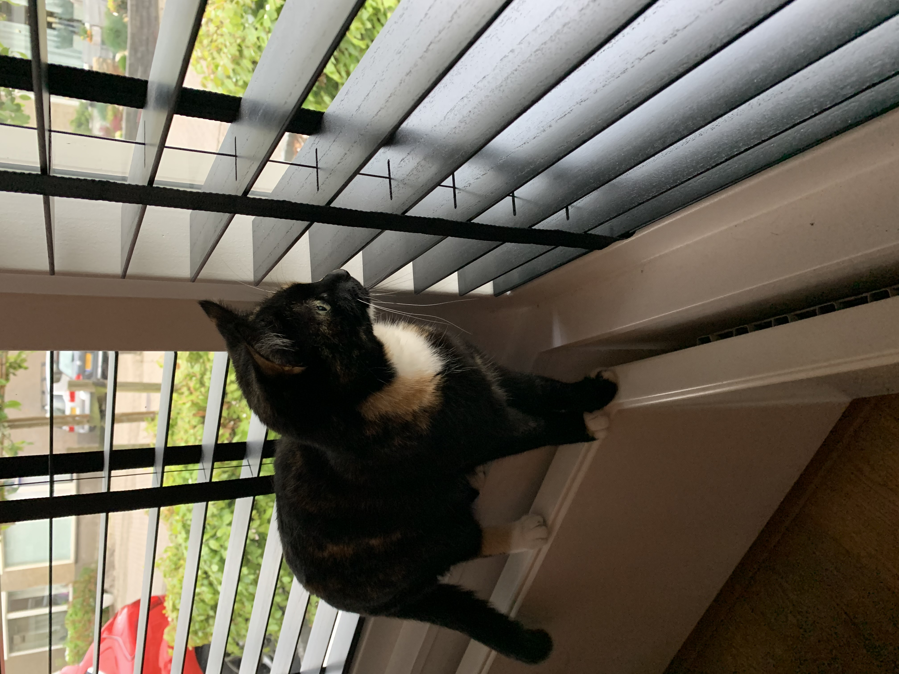
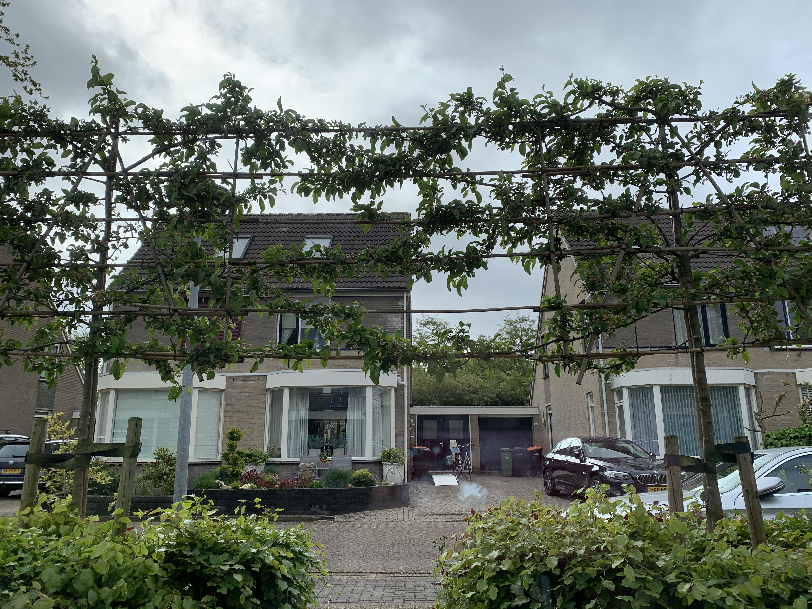

Nox' kattenkwaad
Home
Vogel in de boom
Uiteraard lag ik vandaag weer te slapen op mijn favoriete plekje.
De
nieuwe stoel van de baasjes.
Toen ik wakker werd van gefluit van een vogeltje. Ik opende een oog en keer naar de boom voor ons huis.
Daar zat hij, op een boomtak, niet ver weg. Ik sprong op zodat ik er naartoe kon gaan. Toen ik op de
vensterbank stond en naar de vogel toe wilde springen
kwam ik een groot doorzichtig vlak tegen:
Weer tegengehouden door het raam.


De hele dag geknuffeld
Vandaag waren mijn baasjes de hele dag thuis.
Geukkig hadden zij een nieuwe serie ontdekt die ze graag zo snel mogelijk wilden kijken.
Deze wezens hebben daardoor de hele dag op de bank gelegen.
Een mazzeltje natuurlijk voor mij:
Ik mocht de hele dag opschoot!